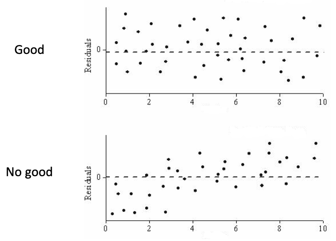
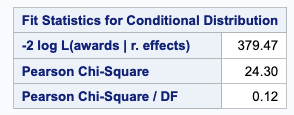
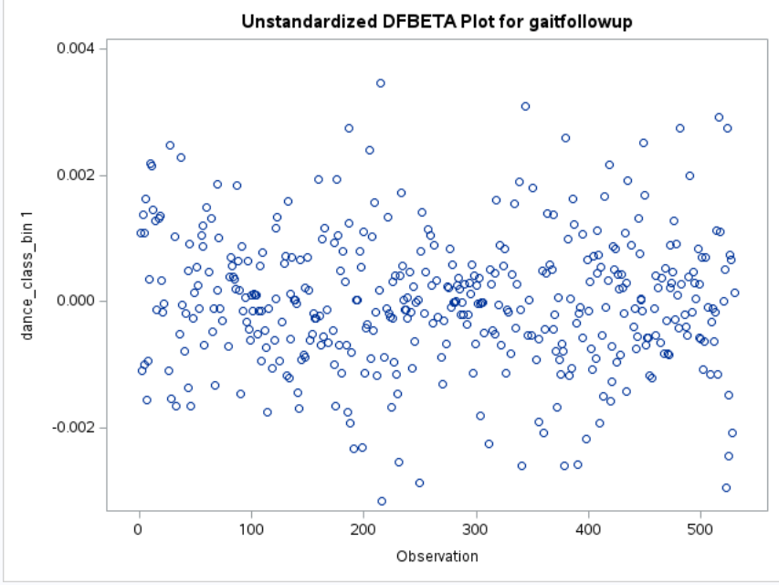

This class is being conducted in person, as well as over Zoom. As the instructor, I will be recording this session. I have disabled the recording feature for others so that no one else will be able to record this session. I will be posting this session to the course’s website.
If you have privacy concerns and do not wish to appear in the recording, you may turn video off (click “stop video”) so that Zoom does not record you.
The chat box is always open for discussion and questions to the entire class. You may also send messages privately to the instructor. Please note that Zoom saves all chat transcripts.
Modeling choices/assumptions for LMEs/GLMMs and GEEs
Marginal and conditional residual analysis for LMEs/GLMMs
Investigating over/under-dispersion in Poisson GLMMs/GEEs
Influential observations in LMEs/GLMMs/GEEs: leverage and DFBETA
Other diagnostics for GEEs
Model diagnostics
So far we’ve dealt with how to model correlated data
But how do we assess whether the modeling choices we’ve made are sound?
There are some analyses/diagnostics we can perform to explore this
Heavy emphasis on explore
We know that our model likely won’t perfectly reflect the true form/relationships in the data
But we should assess whether there are major discrepancies between what we’ve assumed and what’s in the data
Use these as a temperature check for whether the model needs to be adjusted, how much confidence can be placed in estimates, and whether estimates need to be presented with caveats
Also, in the non-longitudinal clustered data settings, there are not many diagnostic checks for GEE models
This is because we aren’t assuming much for GEEs - we’re estimating most of the covariance matrix
So we’ll mostly be focusing on mixed models in this session
Modeling choices
Let’s review the various modeling choices we’ve covered so far
First, we can choose between conditional/mixed vs marginal models
Usually this will be driven by whether we want a conditional or population-averaged interpretation of our effects
Within conditional/mixed models, we make decisions about:
Variable for random intercepts
Variable(s) for fixed effects (isolating causal pathway)
Outcome distribution
Link function
Within marginal models, we make decisions about:
How to specify the mean model/what variables to include to isolate causal pathway
Marginal variance function
Correlation structure
Model-based vs robust confidence intervals
Mixed model residual analysis
Recall the form of a LME with one exposure variable \(U_{ij}\) for individual \(j\) in cluster \(i\):
In mixed models, we refer to \(r_{ij}\) as the marginal residuals (only subtracting the fixed effects)
In mixed models, we also have conditional residuals (subtracting marginal and random effects): \[r^c_{ij} = Y_{ij} - \left(\vec{X}_{ij}\widehat{\vec{\beta}} + Z_i \hat{b}_{i0}\right)\]
Mixed model residual analysis
Recall the form of a LME with one exposure variable \(U_{ij}\) for individual \(j\) in cluster \(i\):
If the model adequately captures the systematic trend of the response, then the residuals should exhibit no systematic pattern
i.e., they should be scattered fairly randomly around zero
The marginal and conditional residuals will tell us different things about where we might be seeing misspecification/issues with model assumptions
Marginal residuals vs predicted/fitted response
Marginal residuals can be used to check for systematic departures from the model for the mean response
We often do this by making a scatter plot of marginal residuals vs marginal predicted values
Fitting a smoothed curve (e.g., lowess) through the scatter plot can help visualize any trends

Usually, any (major) systematic pattern in the residual indicates inadequacy of the model in some way
Solution: re-fit the data with a more flexible model (e.g., interactions, quadratic terms, and perhaps more covariates)
This only works for LMEs, though! Usually very hard to check functional form of covariates for logistic or log-linear GLMMs
Conditional residuals vs predicted response
Conditional residuals can be used to check for overall model fit (mean response, use of random effects, or constant individual-level variance)
Plots of conditional residuals against conditional fitted values will tell you about how well the data fits your assumptions about the random intercepts (zero mean), the constant \(\epsilon_{ij}\) variance assumption, and whether you have outlying subjects/clusters
Conditional residuals vs predicted response
In R, we can plot the model object to get a conditional residuals plot:
library(lme4)# run an LME with random intercepts for county #radon_lme <-lmer(log_radon ~ floor + (1| county), data=radon.mn)plot(radon_lme, smooth=T)
Points fairly randomly distributed around 0
Smoothed line not showing significant trends
Residuals vs predicted response
We can also get the marginal residuals using the hlm_diag() function:
library(HLMdiag)# get various standardized residuals #radon_resid <-hlm_resid(radon_lme,standardize=TRUE)colnames(radon_resid)
Investigating dispersion in Poisson GLMMs (recap from week 2 recorded video)
Recall that Poisson GLMMs assume that the mean and variance of the data are the same
When this assumption is broken, we say that dispersion is present
If variance \(>\) mean, we have overdispersion
If variance \(<\) mean, we have underdispersion
If dispersion is present this is an indicator that we likely want to fit something like a Negative Binomial GLMM that allows variance \(\ne\) mean
If that does not fix the issue, it may be that the dispersion is caused by “excess” zeros - in this case, something like a zero-inflated Poisson or NB model might work better
Investigating dispersion in Poisson models (recap from week 2 recorded video)
To see if dispersion is present, we can calculate the dispersion parameter using the squared sum of Pearson residuals: \[\widehat\phi = \frac{\sum[\text{Pearson Residual}_{ij}^2]}{\text{Residual degrees of freedom}}\]
Pearson residuals correct for the unequal variance in the raw residuals by dividing by the standard deviation - this includes an estimate of the dispersion paramter (which we’re extracting above)
\(\hat\phi\) should be 1 if there is absolutely no dispersion
Will usually expect this not to be exactly 1, but major departures (rule of thumb: \(<0.75\) or \(>1.4\)) indicate a NB model is likely better
Investigating dispersion in Poisson models (recap from week 2 recorded video)
SAS calculates and displays \(\hat\phi\) in its default result output - For PROC GLIMMIX method=QUAD, the dispersion parameter is listed under “Pearson Chi-Square / DF” in the “fit statistics for conditional distribution” table

Investigating dispersion in Poisson models (recap from week 2 recorded video)
In R, we can calculate the dispersion parameter by hand:
library(lme4)awards_quad <-glmer( awards ~ write + (1| cid),family =poisson(link="log"), data = awards,control=glmerControl(optimizer="bobyqa") )# estimate dispersion parameter ## pearson weighted residual sum of squares divided by degrees of freedom ## if not dispersion, we want this to be 1 #summary(awards_quad)$devcomp$cmp["pwrss"] /summary(awards_quad)$AICtab["df.resid"]
pwrss
0.1233381
# can also calculate the pearson RSS yourself #sum(resid(awards_quad, type="pearson")^2) /summary(awards_quad)$AICtab["df.resid"]
df.resid
0.1233381
This dispersion parameter is very small, so the data is likely very under-dispersed
Investigating dispersion in Poisson models (recap from week 2 recorded video)
We can also use the testDispersion() function
# can use the testDisperson() function from DHARMa as well #library(DHARMa)testDispersion(awards_quad, type="PearsonChisq")
Parametric dispersion test via mean Pearson-chisq statistic
data: awards_quad
dispersion = 0.12334, df = 197, p-value < 2.2e-16
alternative hypothesis: two.sided
This provides a formal test for whether \(\hat{\phi} \ne 0\) in addition to calculating the estimated \(\phi\)
I would generally not pay much attention to the p-value - focus on the estimated value for \(\phi\)
If there’s dispersion in the mixed model, there will (likely) be dispersion in the marginal model
With GEEs you can combat this with robust standard errors, even if you don’t specify a NB marginal variance
Leverage
We may also be interested in whether we have particularly influential observations in our data that are (overly) influencing our model estimates - we investigate this via “leverage” or Cook’s distance plots
Leverage looks at how removing an observation/cluster affects predicted values/residuals – it will tell us us about extreme values in the predictor space
Cook’s distance looks at how removing an observation/cluster affects regression coefficients when combined
We can also see whether we have any particularly influential clusters as well
Unfortunately PROC GLIMMIX doesn’t have functionality for influence metrics, but R does
Looks like we have a lot of observations that are influential based on Cook’s distance…
Leverage
Cluster-level leverage/Cook’s D
# looking at observation-level leverage on the fixed effect estimates #radon_leverage_cnty <-hlm_influence(radon_lme, leverage="overall", level="county")ggarrange(dotplot_diag(radon_leverage_cnty$leverage.overall, cutoff="internal", name="leverage"),dotplot_diag(radon_leverage_cnty$cooksd, cutoff="internal", name="cooks.distance"),ncol=2,nrow=1)
Just a few key counties that are influential based on Cook’s distance…
DFBETA
A similar measure of influential observations is DFBETA - it’s the change in a regression coefficient if the \(ij^{th}\) observation were removed
Most functions/procedures will plot DFBETAs for each coefficients in the regression
DFBETA is technically agnostic to model type - should work for both conditional and marginal models
For SAS, PROC GLIMMIX doesn’t have any influence statistics built in but PROC GENMOD does
For R, I’ve had issues getting the lmer(), glmer(), and gee() functions to play nicely with the dfbeta() function
DFBETA in PROC GENMOD
In SAS, we use the PLOTS(UNPACK)=DFBETA option:
proc genmod data=dance PLOTS(UNPACK)=DFBETA; class village_id dance_class_bin(REF="0"); model gaitfollowup = dance_class_bin / dist = normal; repeated subject=village_id / type=exch;run;
We’re looking for observations that are clearly apart from the “herd”
This plot looks fairly random and scattered, though
We could also look at the standardized DFBETA by using PLOTS(UNPACK)=DFBETAS

Other diagnostics for GEEs
While we don’t do a lot of model testing for GEEs, we can compare the empirical estimates of the covariance structure to the model-based estimates
For this we can compare the model-based and robust standard errors or confidence intervals of regression coefficients
If there is a large discrepancy, our robust variance estimator is probably doing the heavy lifting of correcting this for us
What’s a “large” difference? Hard to say – it can be helpful to form a ratio \(\frac{\text{robust SE}}{\text{model-based SE}}\) to see what percentage larger/smaller the robust standard error is compared to the model-based one
In this setting (non-longitudinal clustered data) though, we aren’t likely to see much discrepancy
Take away messages
More diagnostics available for assessing LMEs/GLMMs because we make more assumptions in those models
Residual plots can be useful to assess whether modeled variance/covariance correctly (constant variance, random intercepts), and sometimes to assess functional form of fixed effect covariates
Influential observation analyses, like looking at leverage or DFBETA, can be useful for either LMEs/GLMMs or GEEs to see if “outlier” observations are strongly influencing the fit of our model
We can assess how well we’ve modeled the covarinace in GEEs by comparing the model-based standard errors to the robust standard errors
What if we want to compare 2 different models? We’ll get to this after the midterm